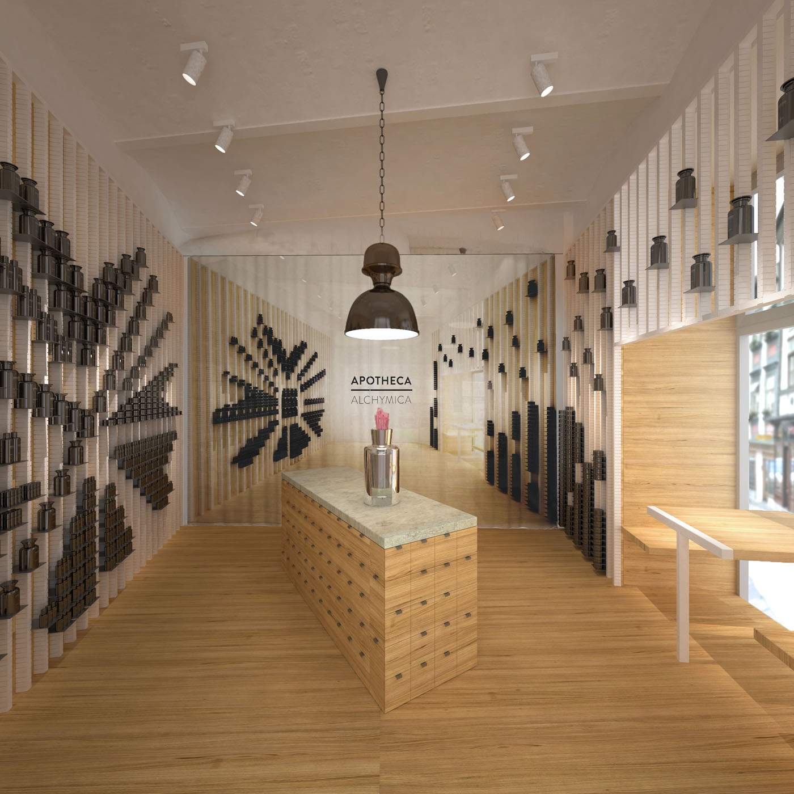
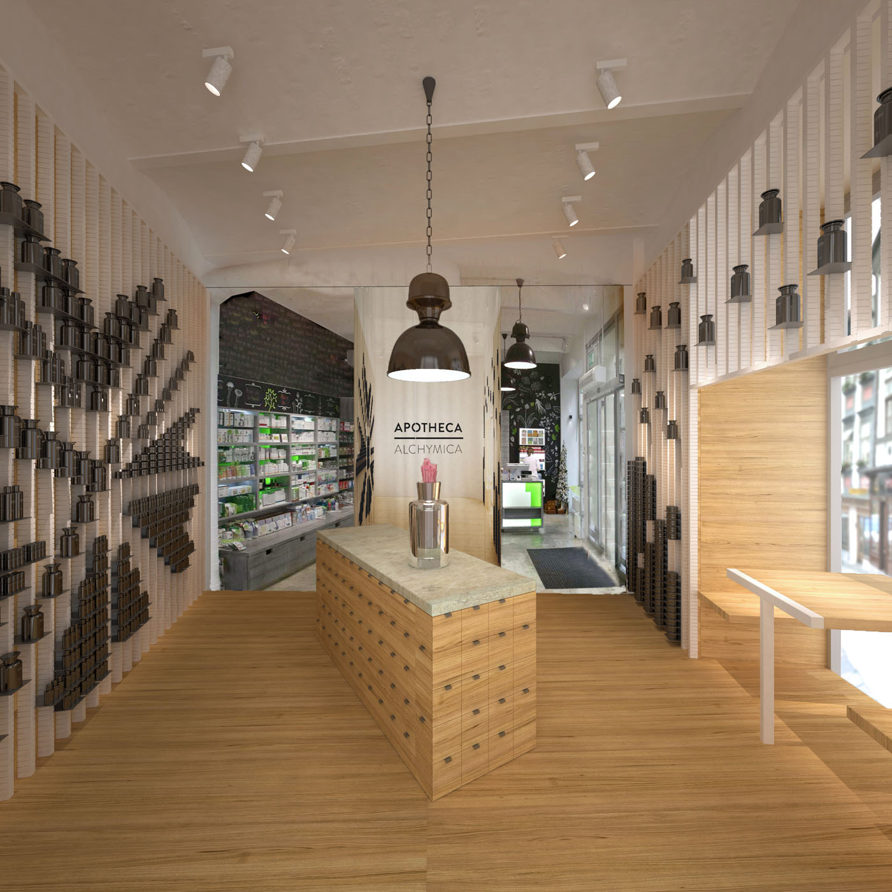
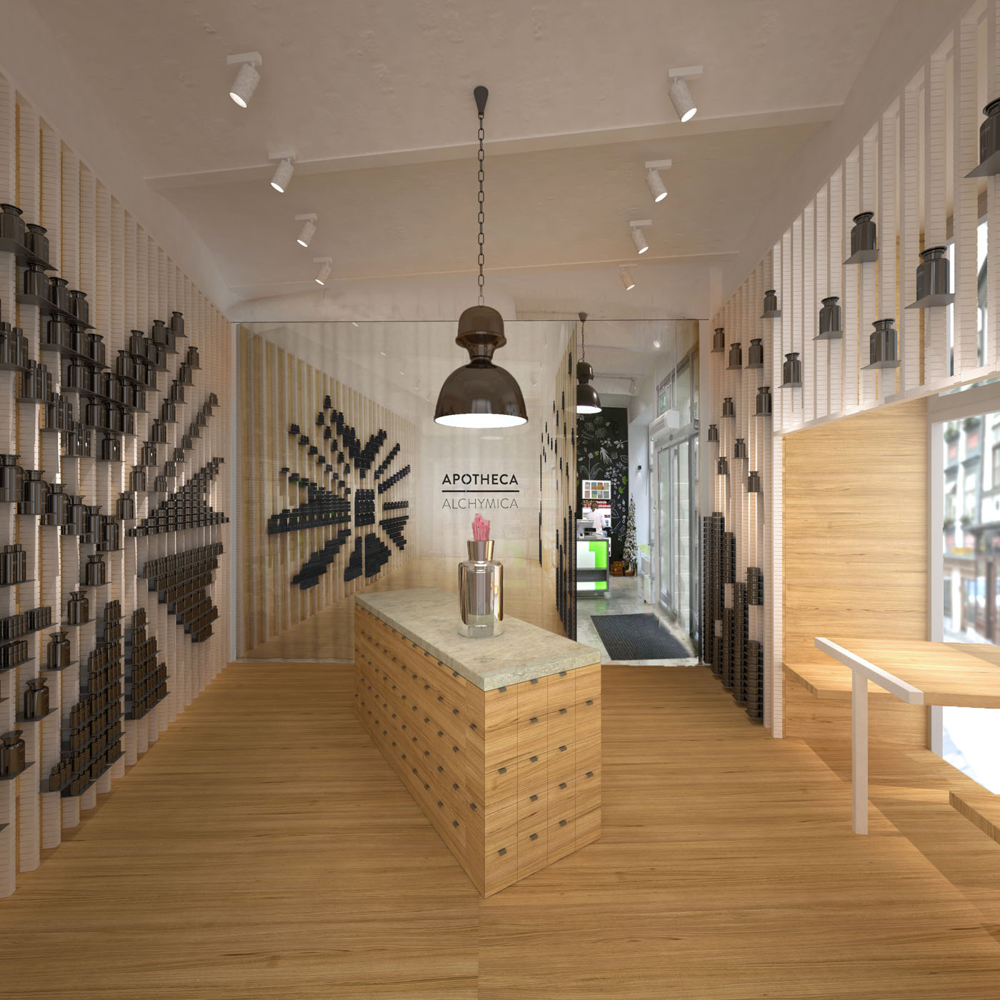
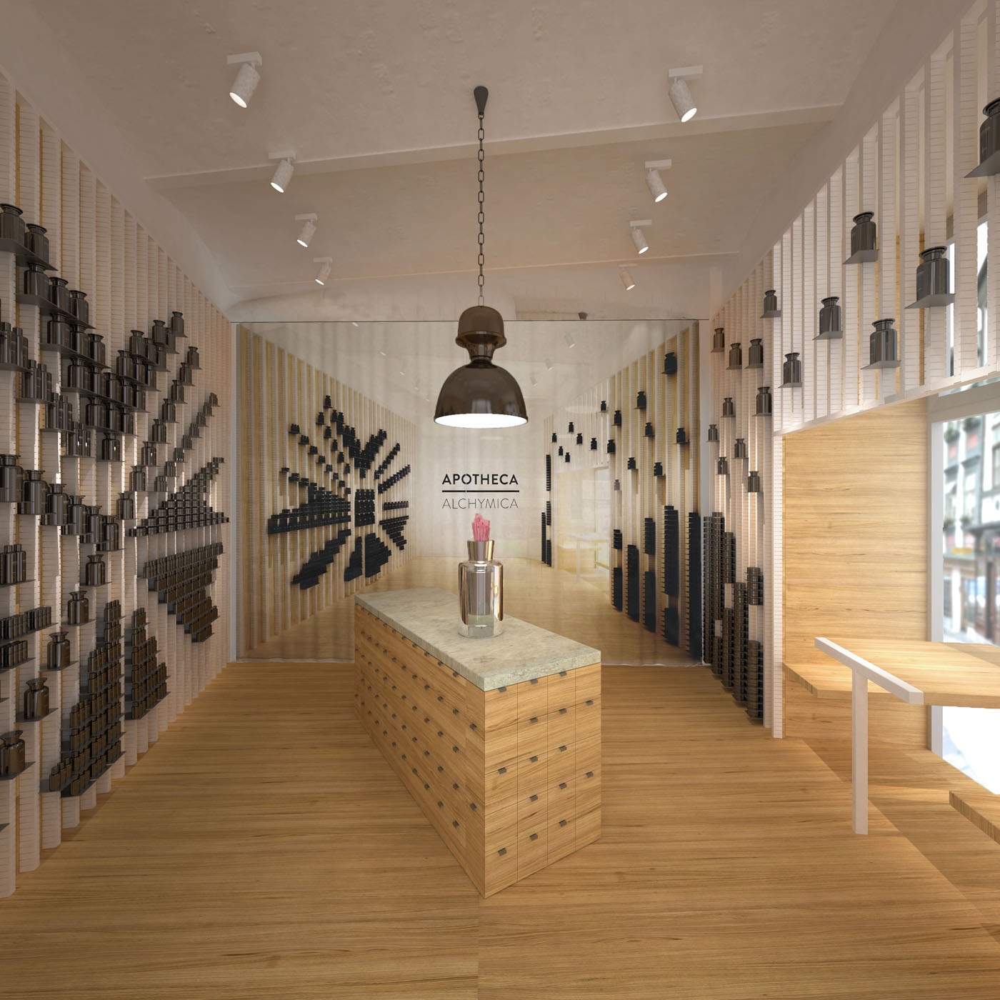
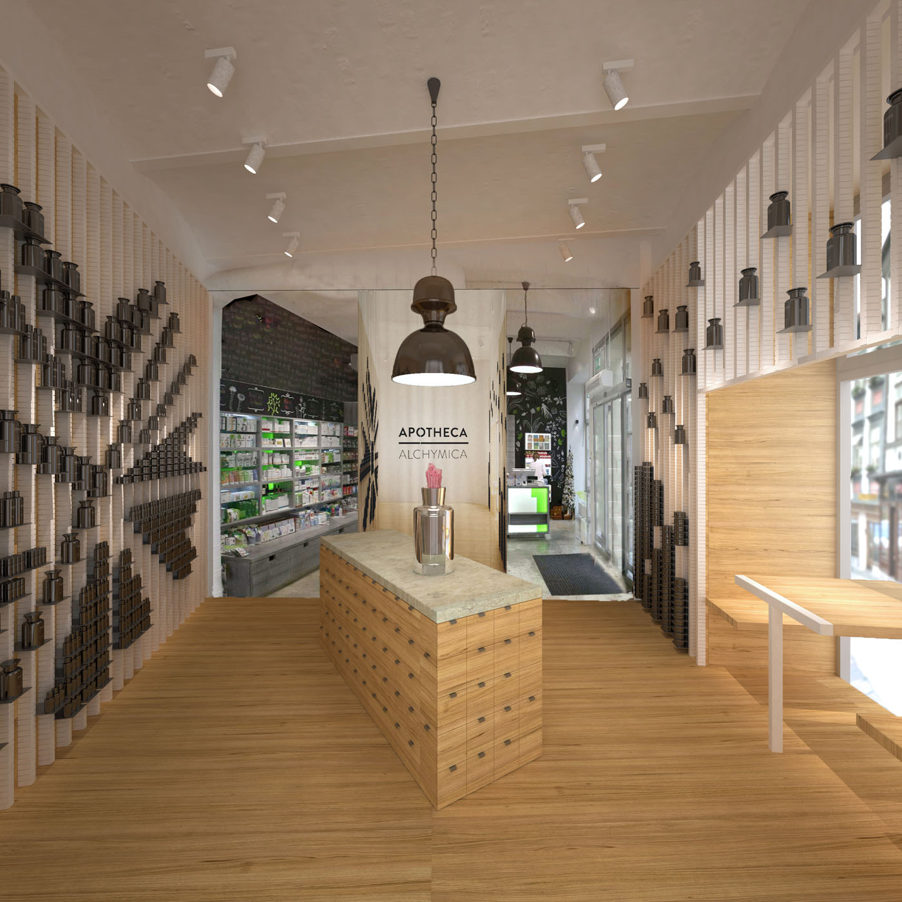
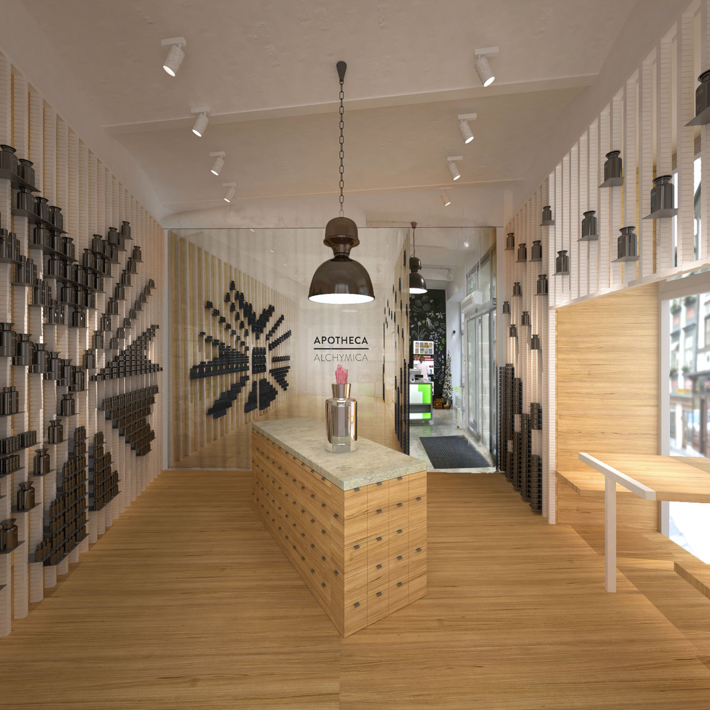
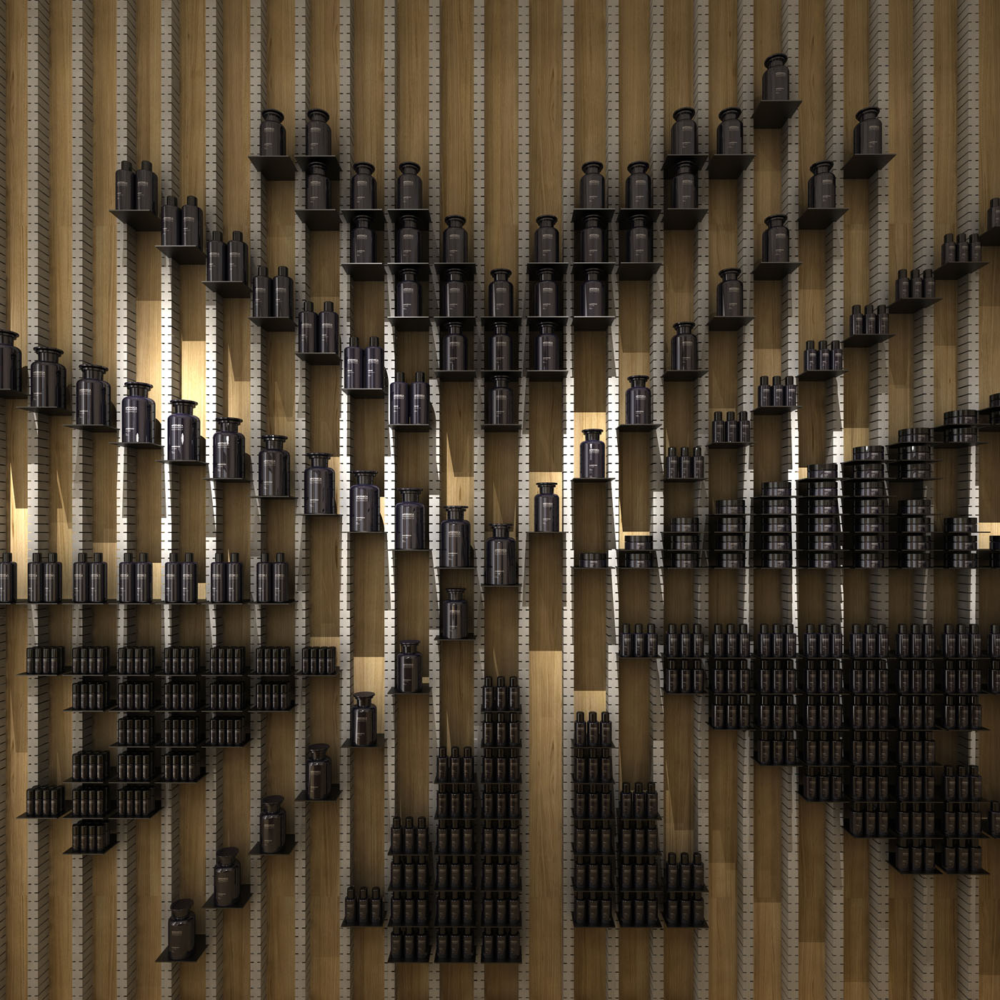
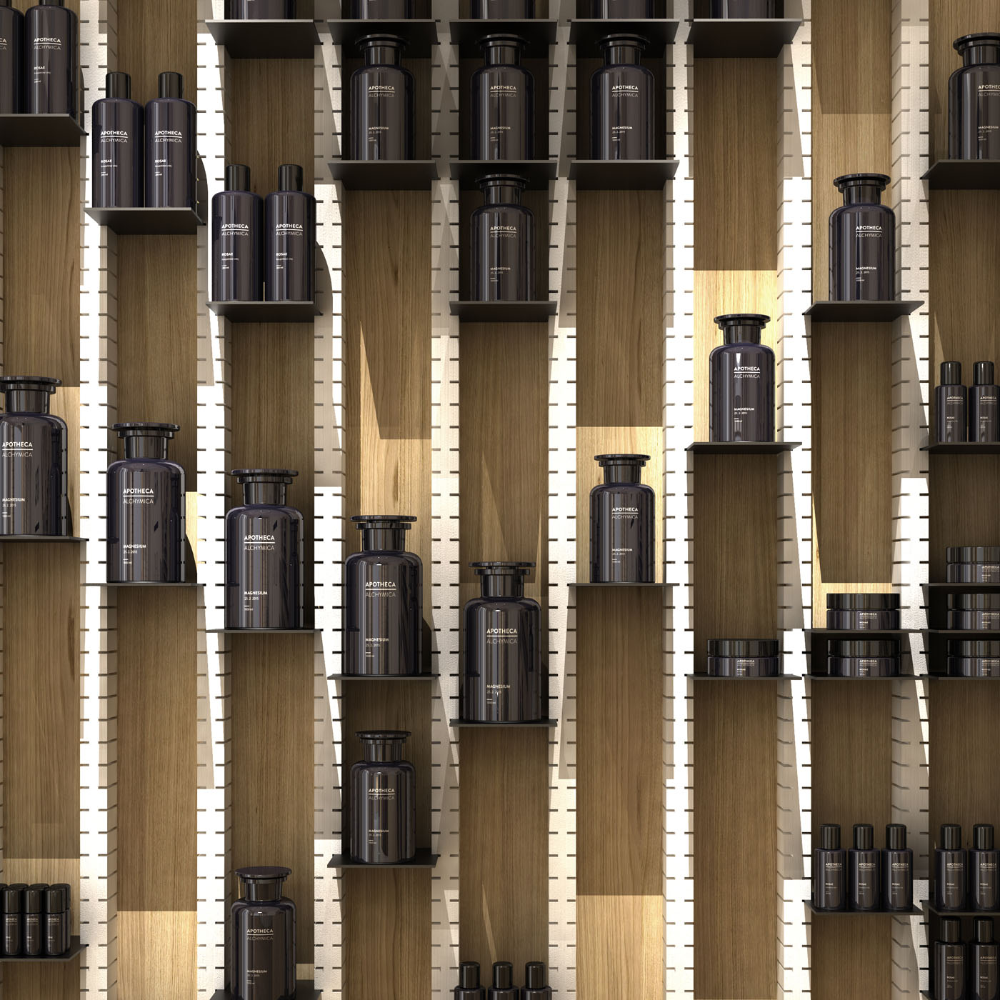
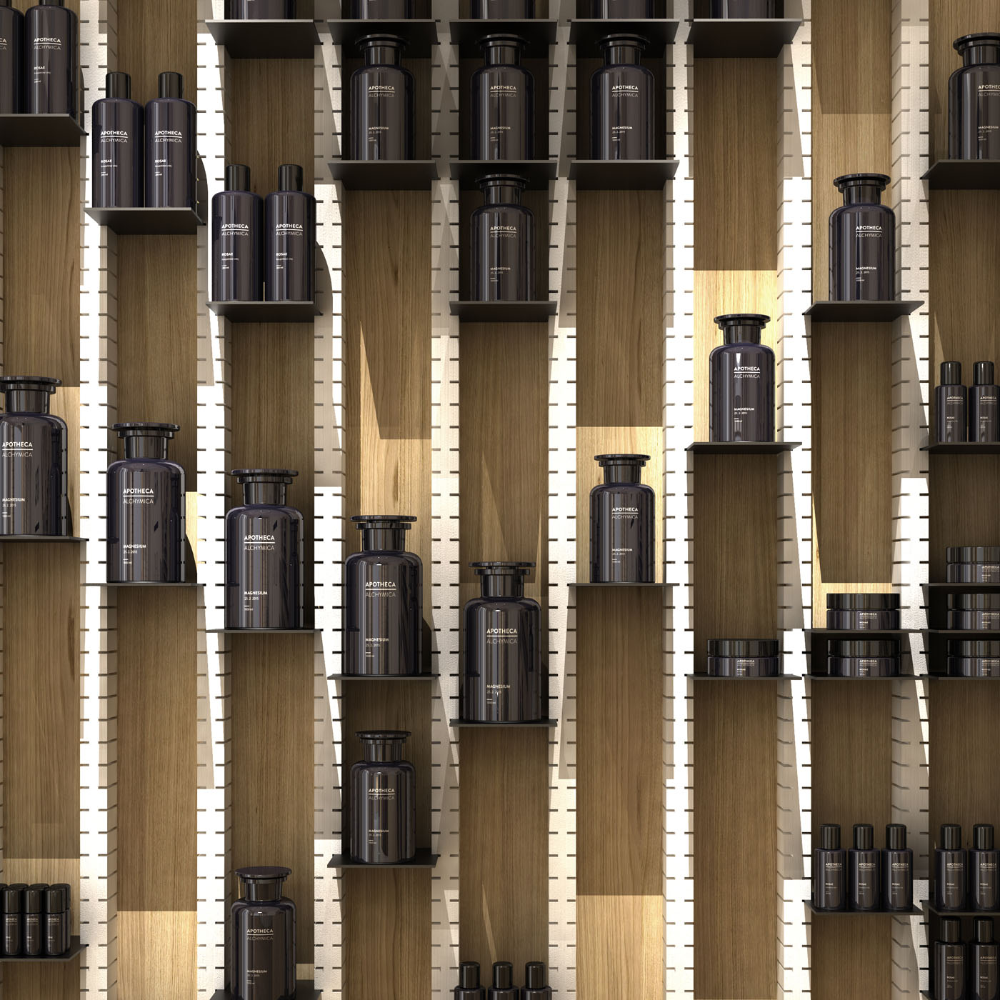

-

 



-

 


Apotheca alchymica – parfumerie Brno
Apotheca Alchymica je nová značka parfémů a kosmetiky, která na český trh vrací prvotřídní kvalitu ingrediencí a tradičního řemesla. Této filosofii odpovídá i návrh interieru prodejny. Návštěvníkovi musí být na první pohled jasné, že se nejedná o “obyčejnou” parfumerii světových značek. Kvalita kosmetiky a parfémů se propisuje jak do obalů, grafického designu, tak i do návrhu interieru, do kvality materiálů a zpracování. Zákazník by ale neměl přijít pouze do exkluzivní prodejny. Z filosofie chytrých lékáren Apotheca přebírá především přívětivost k zákazníkovi. Interiér by tedy měl odkazovat jak ke tradičnímu lékárenskému řemeslu, tak být příjemným až útulným prostorem, kde se zákazník uvolní, zdrží se o něco déle než by musel a rád se opět vrátí..
Ústředním tématem, ještě před započetím návrhu, bylo vyřešení funkčního členění prostor. Snadno by mohlo dojít ke znečitelnění až zmatení zákazníka, který chce jít do parfumerie, ale vidí pouze vchod lékárny. Dublování označení obou prodejen u jednoho vstupu by ubíralo oběma z nich. Řešením je proto vstup nový, který se otevírá do prostor frekventovaného náměstíčka před Velkým Špalíčkem. Vznikají dva vstupy, dva oddělené provozy, které ale zároveň profitují ze své vnitřní propojenosti. (Při koupi léků mohu nahlédnou a uslyšet něco o kvalitní kosmetice – kterou by zákazník lékárny jinak třeba nevyhledával a naopak, při koupi parfému ještě vyřídí nutný nákup v lékárně).
Oba prostory bylo tedy nutné na jednu stranu funkčně propojit, na stranu druhou vizuálně předělit aby si svoji různorodostí navzájem neubírali na atmosféře. Především z intimního prostoru parfumérie se otevíral pohled do prostoru lékárny s vysokou intenzitou světla a rušil tak její komorní atmosféru.
Důležitým východiskem pro návrh byl postupný růst a proměnlivost produktů. Zároveň by měla instalace vždy působit uceleně s jednotkami i několika desítkami druhů vůní a kosmetiky. Proto je hlavním motivem prostoru úložný systém, který je možné variabilně a kreativně přestavovat a také zvyšovat a snižovat jeho kapacitu. Jsou to bíle lazurované dřevěné profily s drážkami na plechové poličky, které se do něj jednoduše zasouvají. Zadní stěny jsou vyrobeny z překližky, která by měla přirozenou světlou barevnost dřeva. Kombinace dřevěných materiálů dodá interieru příjemnou měkkost a útulnost. Budou kontrastovat s tmavými lahvičkami, které na světlém pozadí dobře vyniknout. Podlaha parfumerie je vyvýšena o 20cm na úroveň chodníku. To umožní bezbariérový přístup a zároveň se jedním schodem lépe oddělí oba vnitřní prostory. Otvor okenní výlohy je využit pro posezení zákazníků s lékárnicí. Nachází se v meziprostoru mezi ulicí a parfumerií kde může návštěvník objevovat nové vůně a objednat si další čerstvé produkty. Stěna, která přiléhá k sezení bude věnována především uskladnění prázdých lahviček. Které budou upozorňovat na míchání kosmetiky přímo na místě a podle individuálního přání zákazníka. Hlavní stěna naproti bude prezentovat již hotové řady v různorodých obrazcích a variacích. Ve středu místnosti se nachází stůl pro prezentaci nových vůní. Odkazuje k tradičním lékárenským pultům mramorovou deskou a čtveratými šuplíky. Osvětlení prostoru je celkově potlumené, intimní atmosféry se dosáhne bodovým nasvětlením pouze důležitých prvků - středového stolu a instalace lahviček na stěnách.
Exterier bude doplněn jednotným vývěsním štítem přes celou šířku domu, který bude nad jednotlivými vstupy nést označení Apotheca Alchymica a Chytrá Lékárna. Docílí se tak jednoznačného oddělení provozů, ale také naznačení příbuznosti značek. Roh domu, který se obrací do náměstíčka bude doplněn písmomalířským logem Apothecy.
Už zadání projektu investorem naznačuje, že Apotheca Alchymica může být v každém detailu prvotřídní produkt. Pokud má být opravdu úspěšný nesmí být oslabena žádná z jeho částí. Vůně, produktový design ani architektura prodejny, přístup k zákazníkovi, marketing apod.. Protože celek je vždy více než pouhý souhrn jeho částí. Stejně jako hezké obaly nemohou být bez kvalitní vůně, tak kvalitní produkt nemůže být bez charakteristického místa, které ho prezentuje a prodává.
| Klient | Chytrá lékárna |
| Lokace | Brno – Střed, Česká repulika |
| Typologie | komerční prostor |
| Typ | interier |
| Rok | 2015 |
| Status | studie |
| Autoři | MgA. Filip Kosek, MgA. Jan Říčný, Herrmann & oufal: MgA. Eduard Herrman, MgA. |
| Spolupráce | grafický design: Veronika Vacková |